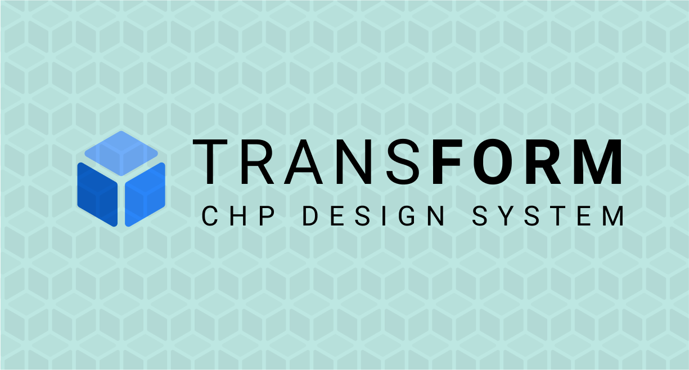
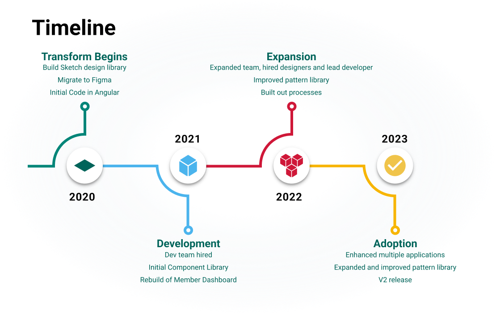
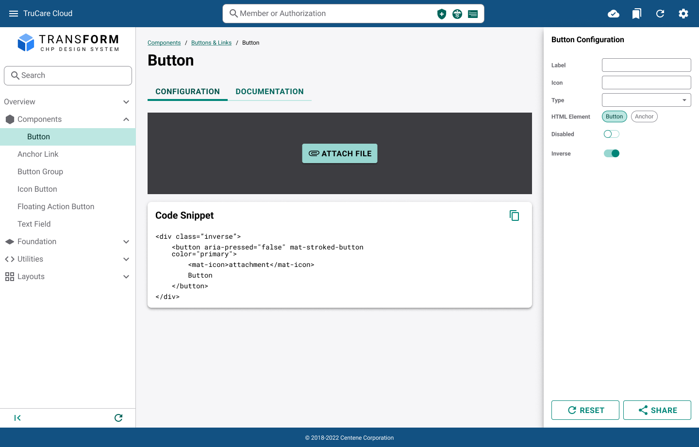
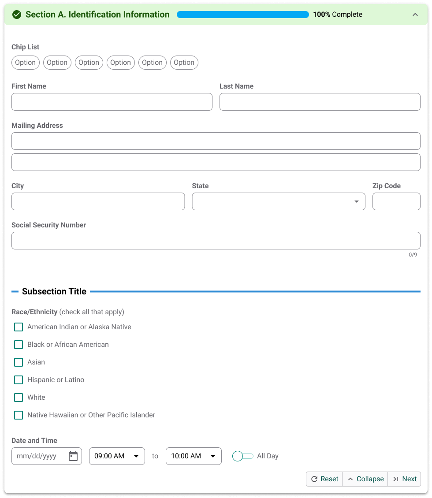
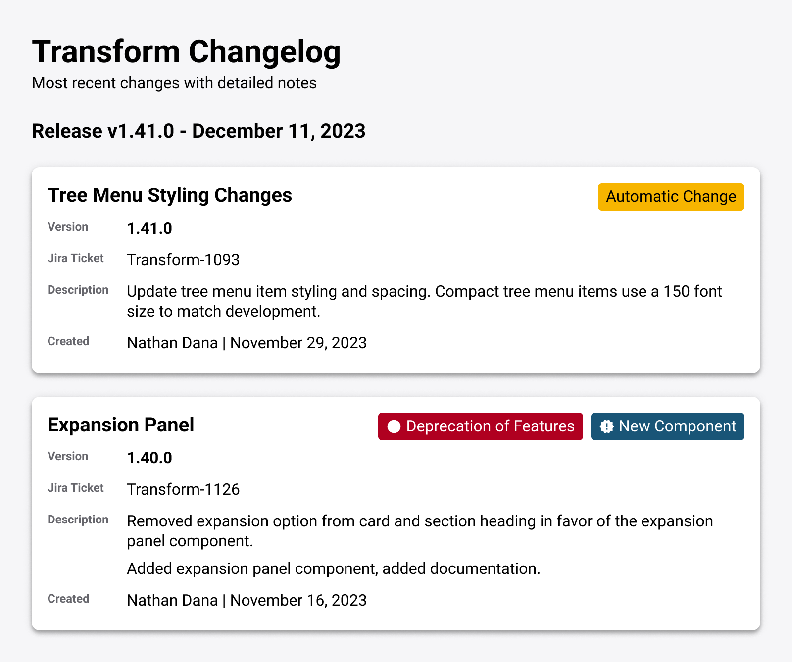
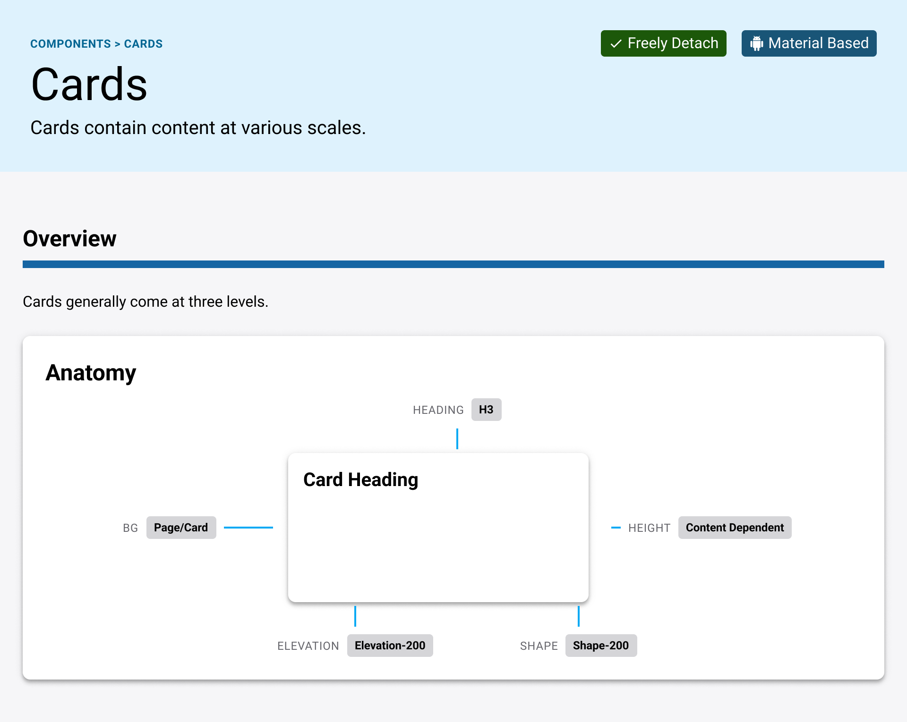
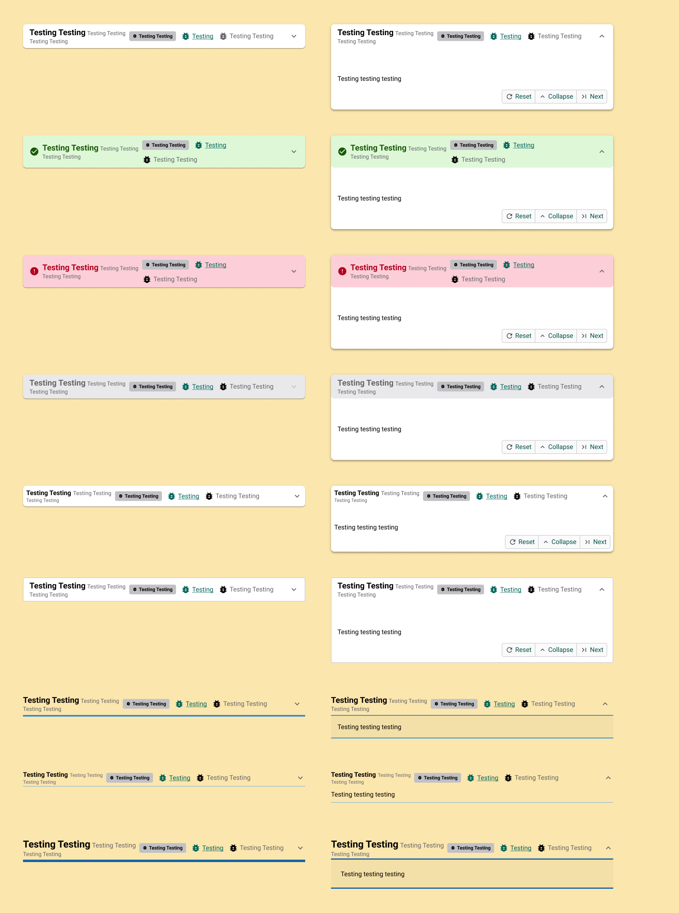

Case Study: Transform Design System
2020–2023 | Centene Corporation | Design Systems | UX Architect
I led the creation and evolution of Transform, an internal design system that streamlined TruCare Cloud. TruCare Cloud is an enterprise application that facilitates the insurance authorization process, has extensive work management, creates long term service and support requests and more. Used daily by 20,000 employees at Centene, a Fortune 25 enterprise, it directly impacts the health and well-being of tens of millions of Americans.
Initially developed as a small design library, Transform has grown into the interface backbone of this essential tool. The goal of Transform was to improve user experience, enhance consistency, and reduce development time by offering a centralized, reusable set of design components. Over time, Transform evolved into a full-fledged design system with scalable processes, robust governance, and strong cross-functional collaboration.

- 2020 - Transform Begins
- Build Sketch design library
- Migrate to Figma
- Initial Code in Angular
- 2021 - Development
- Dev team hired
- Initial Component Library
- Rebuild of Member Dashboard
- 2022 - Expansion
- Expanded team, hired designers and lead developer
- Improved pattern library
- Built out processes
- 2023 - Adoption
- Enhanced multiple applications
- Expanded and improved pattern library
- V2 release
Team Formation & Cross-functional Growth
Transform began as a one-person effort—me. As the sole UX designer, I initially focused on defining core components and patterns using Sketch. These early components established the foundation of the system, which was later migrated to Figma to improve collaboration and scalability. The design system was heavily influenced by Material Design, ensuring a familiar and intuitive user experience for developers and users alike.
Recognizing the need for development support, we onboarded four contract developers who began building components in Angular using Angular Material. I contributed directly to the codebase, created their backlog, and provided direction to ensure alignment with design principles. Additionally, I played a hands-on role in the adoption process by guiding the first sub-application to implement Transform, troubleshooting issues, and ensuring successful integration.
With the growing complexity of Transform, we hired a lead developer to manage technical architecture and lead the development team. This pivotal hire allowed us to expand further into a fully functional scrum team, including additional developers, QA specialists, and a product owner. Together, we implemented agile methodologies, refined processes, and established a collaborative workflow that ensured the design system's long-term sustainability.
Pattern Library
We built a dynamic Pattern Library site that served as a showcase, playground, and code resource. Users could configure components, explore usage scenarios, and export code—all through an intuitive interface.
Feedback loops with developers led to continual enhancements. Our vision extended beyond a library: we laid the groundwork for a future page builder capable of drag-and-drop coded layouts, empowering faster prototyping and production.

The development of the pattern library was driven by user research and continuous feedback from developers. This feedback loop enabled us to identify and prioritize ongoing feature improvements, such as enhanced component configurability and better documentation. Looking ahead, our future vision includes transforming this pattern library into the foundation for a page builder tool. This tool would allow teams to rapidly build functional prototypes and fully coded pages by assembling pre-built components, further accelerating development and fostering innovation.
By designing and building the pattern library in-house, using Transform, we were able to be our own users. This allowed for improvements in designer and developer experiences, and allowed us to better support our customers.
Support Model
As TruCare Cloud grew, so did Transform. When I started, I was able to stay in touch with every designer on the project, supporting, co-designing, gathering feedback, joining forces in research. That became harder as my role expanded, so I worked with leadership, and created a liason process, where the designers on Transform were dedicated support for our customer designers. This meant our customers always knew who to talk to, creating professional relationships and trust. This was highly successful in building rapport, just as it was in building better experiences across the product.
Accessibility
Recognizing the importance of inclusive design, I took the initiative to integrate accessibility into Transform's core by creating detailed reports, conducting internal testing, and developing training programs for designers to ensure compliance with accessibility standards. I worked closely with the accessibility team to improve my personal understanding and empathy for accessibility, which informed our approach to testing and design.

When we started, there was no formal accessibility support team in place. These efforts culminated in passing rigorous accessibility audits, meeting internal benchmarks, and ensuring all components adhered to WCAG guidelines. By embedding accessibility into our design and development processes, we not only improved the overall usability of the system but also set a standard for future enterprise projects.
Lessons Learned
Design Systems Are About Relationships
Throughout the development and scaling of Transform, one of the key takeaways was that design systems are fundamentally about relationships. In areas where I was able to build strong relationships—with developers, product managers, and other stakeholders—we saw significant success in adoption and expansion. Teams that trusted the system were more likely to integrate it into their workflows, which led to consistent, high-quality user experiences.

Component-First > App-First
We initially attempted an app-by-app approach to adoption, which required extensive alignment between product, development, design, and leadership—areas where I did not have direct influence. When relationships were strong and priorities aligned, we saw significant progress. However, when those relationships weren’t as solid or priorities diverged, it became far more challenging to achieve success and drive adoption effectively.
In hindsight, a more strategic component-by-component approach might have yielded better results. Since most applications had been developed before the design system existed, comprehensive rebuilds were rarely prioritized. Focusing on incrementally replacing key components, such as buttons, across the software would have been a simpler and more efficient way to introduce Transform, ultimately positioning it to drive greater consistency across the enterprise.

Conclusion
Looking back, I am proud of the system that we built. Transform is comprehensive and robust, easy to use and implement. Though I’ve since moved on, Transform continues to be used across the application—despite currently running without dedicated design support. I've used the processes, testing, components and feature set of Transform to help improve the enterprise wide design system, Fondue.
Transform's success was built on a foundation of scalable processes, accessibility, and strong cross-functional relationships. From a single-contributor project to an enterprise-wide solution, it has become a vital tool that enhances productivity, improves user experience, and ensures design consistency across the organization. The lessons learned from this journey continue to inform how we approach design systems and collaboration at scale.

Impact Summary
- 20,000+ daily users
- 16+ apps integrated
- 40+ reusable components
- Passed WCAG accessibility testing
- Fully tested and documented